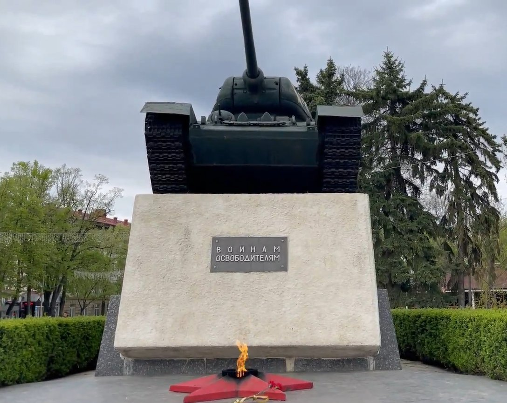
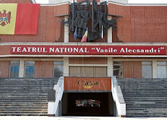

Достопримечательности
Центральный парк имени Михая Волонтира

это одно из самых любимых мест отдыха жителей города. Просторные аллеи, ухоженные зелёные зоны и уютные скамейки создают атмосферу спокойствия и уюта. Здесь можно прогуляться в тени деревьев, провести время с семьёй или просто насладиться природой в самом центре города. Парк является важной частью городской жизни и часто становится площадкой для культурных мероприятий и праздников.
Танка Т-34

В центре Бельцы, на главной площади города, расположен мемориал Т-34 — один из ключевых символов военной истории региона. Этот памятник посвящён подвигу солдат и напоминает о событиях прошлого, сыгравших важную роль в судьбе страны. Танк с бортовым номером 720 гармонично вписывается в городской пейзаж и привлекает внимание как местных жителей, так и туристов. Мемориал стал важной частью культурного наследия города и одним из обязательных мест для посещения.
Театр

Театр — это культурное и художественное пространство, где проходят различные спектакли, концерты и другие мероприятия. Здесь можно насладиться живым искусством и погрузиться в мир драмы, музыки и танца. Театр является важной частью культурной жизни города и привлекает как местных жителей, так и туристов. Он служит площадкой для творчества и обмена идеями, а также способствует развитию культурного наследия региона.